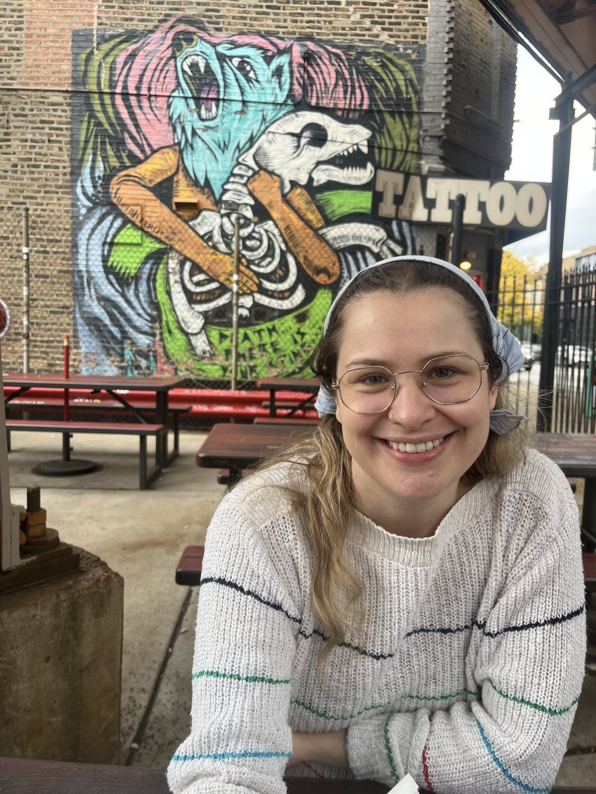

About
Hi, I'm Emily

I grew up in Minnesota (yes, I'm nice) then moved to Madison where I got my education, wrote music columns, and made no-budget films.
Now I live and work as a copywriter in Chicago. You might find me browsing a used bookstore, poking through thrift store shelves, or hanging on my porch with my two cats, Ulysses and Clay Cat.
Professionally, I have a decade of experience writing, editing, proofreading, and brand-building. I can help you shape a brand voice from the ground up. My copywriting specialty is digital and video: I make complex ideas short, simple, and catchy. Nearly all of it has been in regulated industries, so the compliance department usually reads my copy before a customer does. That's a tough needle to thread, but I enjoy the precision. For more on my career, check out my work samples.
Speaking of needles to thread, I also like to make quilts and embroidery. And when it comes to writing, it doesn't stop at copy. I've been writing poetry, short fiction, and columns for well over a decade. I've had a couple things published, and I have a lot more languishing in old notebooks and Google Docs.
I'm an avid film nerd, a NYT crossword enthusiast, and a pop culture connoisseur. My favorite questions are “What are you reading?” and “What are you watching?” so please feel free to share when you get in touch.
Cheers,
EFH
What I bring to the table
Brand voice
Nailing down the way your brand sticks in our ears.
Video & TV
Short or long, ads or how-to’s. I can concept, storyboard, and script.
Digital
Marketing sites, App Store pages, onboarding flows, in-app copy, UX/UI.
Direct response
Written to be measured, tested, and to beat what’s winning.
Editorial services
Editing, proofreading, and an honest read on whether it’s working.
Taste
I have strong, clear opinions. That’s why I’m useful.